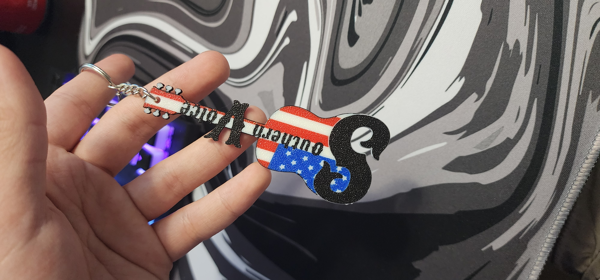

Custom Keychains
Sep 2025

This is just another easy item to make, using an identical process to the Customized Drink Coasters project. It's super easy to make the designs in Adobe Illustrator and then import it into Bambu Studio. Then all that needs to be done is to color it and use a mesh boolean to add a slot hole (could also just be done in Illustrator, but I prefer this).
This page will be updated as I make more keychains. I plan on doing some Call of Duty themed ones as well as some other icons.
Extra pictures from the design process
